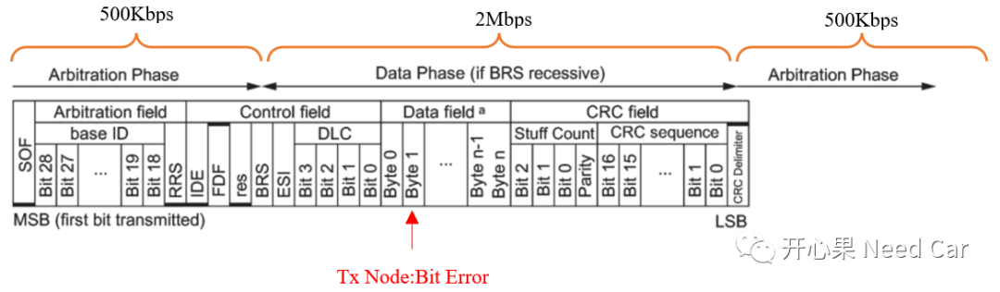
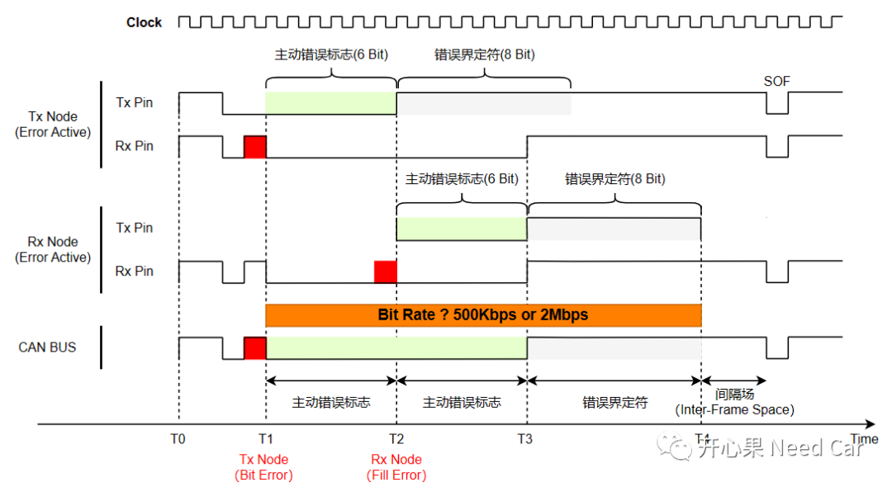
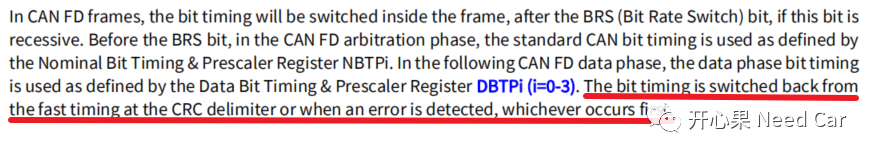

如标题，使用CAN FD格式报文进行通信，假设：仲裁段速率500Kbps,数据段速率2Mbps。当发送节点在数据段出现位错误时（eg：Bit Error，位错误），接下来发送的错误帧速率是继续2Mbps还是切换到500Kbps呢？举例：如下图，发送节点发送一帧CAN FD报文，发送数据段Byte1的某个Bit时，发现了Bit Error（发送的Bit值与回采的Bit值不一致），接下来，发送节点发送错误帧，错误帧的速率是500Kbps还是2Mbps呢？

如上的问题源于群内小伙伴的讨论，个人觉得这个问题很好，很细节，也很值得思考。本问题的起点源于错误帧，关于错误帧，可以参考前文CAN通信基础：错误帧。如下图，假设Tx Node此时正在发送数据段（2Mbps）数据，在T1时刻，Tx Node识别到Bit Error，且Tx Node处于Error Active状态，此时的Tx Node需要发送主动错误帧。T2时刻，Rx Node识别到Fill Error，即：不满足11898规范要求的填充规则（每5个相同的Bit，插入一个反向Bit，eg：000001、111110），Rx Node识别到错误以后，也需要发送错误帧，假设Rx Node处于Error Active。

细化问题：在T1~T4区间，错误帧的速率是500Kbps还是2Mbps?
回答这个问题，我最先想确认11898规范中是否有答案，我没有找到，如果读到此处的你已找到，还请告知。虽然在11898中，我没有找到答案，在芯片手册中（英飞凌TC3xx，其他芯片，读者自行查阅），找到了对应的解释，如下所示：

解释：Tx Node发送CAN FD报文，发送高速数据段时（2Mbit），检测到错误，速率切回Norminal Bit Rate（500Kbps），不用等到CRC界定符位置再切换500kbps。也就是说，Tx Node识别到Bit Error，紧接着以500Kbps的速率发送错误帧，而接收节点不管是以500Kbps速率接收还是2Mbps速率接收，均能识别到Fill Error，之后，Rx Node也会以500Kbps速率发送错误帧。如上，即是本文答案。提示：一个CAN网段内，一般有多个CAN节点，很可能一些节点支持CAN FD格式报文，一些节点不支持CAN FD格式报文，为了兼容非CAN FD节点，且让这些节点识别到错误帧，错误帧的速率设计为500kbps更合理。
点击下方关注，一起聊聊Autosar/嵌入式，如果需要，联系作者进群，给你更专业的解答